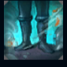
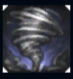
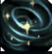
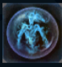

Janna
| Janna The Storm's Fury | |
|---|---|
| Release date | 02.09.2009 |
| Class | Enchanter |
| Positions | Support |
| Resource | Mana |
| Range type | Ranged |
| Adaptive type | Magic |
| Base statistics | |||
| Health | 500 – 1690 | Mana | 380-1438 |
| Health regen. | 6.5 – 16.7 |
Mana regen. | 7.5-16.85 |
| Armor | 38 – 70 | Attack damage | 52 – 99.6 |
| Magic resist. | 30 – 38.5 | Crit. damage | 175% |
| Move. speed | 315 | Attack range | 550 |
Janna e un spirit misterios al elementelor care le poate porunci furtunilor și vijeliilor din Runeterra și care apără oamenii sărmani din Zaun. Unii cred că a luat ființă în urma rugăciunilor marinarilor, ce șopteau cuvinte menite să atragă puterea vânturilor bune atunci când navigau ape înșelătoare sau pătrundeau în mijlocul unor furtuni teribile. Bunăvoința și protecția Jannei au pătruns apoi până în adâncul orașului Zaun, unde a devenit un simbol al speranței pentru oamenii nevoiași. Nimeni nu știe unde sau când se va arăta Janna, dar se spune că de cele mai multe ori apare atunci când este nevoie de ajutorul ei. |  |
AUSTRU Janna primește în mod pasiv un bonus la viteza de mișcare, iar aliații din apropiere primesc și ei acest bonus când se deplasează spre ea. În plus, atacurile de bază ale Jannei provoacă daune magice bonus în funcție de viteza ei de mișcare bonus. |
||
|---|---|---|---|---|
 |
VÂRTEJ Creând o modificare localizată a presiunii și temperaturii, Janna poate crea o mică furtună care va crește cu timpul. Ea poate activa vraja din nou pentru a dezlănțui furtuna. După ce este dezlănțuită, furtuna va zbura în direcția în care este lansată, provocând daune și aruncând inamicii în sus. |
|||
 |
ZEFIR Janna invocă un spirit elemental al aerului, care îi crește în mod pasiv viteza de mișcare și îi permite să treacă prin unități. Această abilitate poate fi activată împotriva unui inamic pentru a-i provoca daune și a-l încetini. Atunci când abilitatea se află în perioada de reactivare, Janna nu primește efectul pasiv. |
|||
|  |
OCHIUL FURTUNII Janna invocă un ciclon defensiv care apără campionul sau turnul aliat de daune și îi crește daunele din atac. |
|||
 |
MUSON Janna se învăluie într-o furtună magică, aruncându-și inamicii în spate. După ce furtuna s-a potolit, adierile alinătoare îi vindecă pe aliați cât timp abilitatea este activă. |